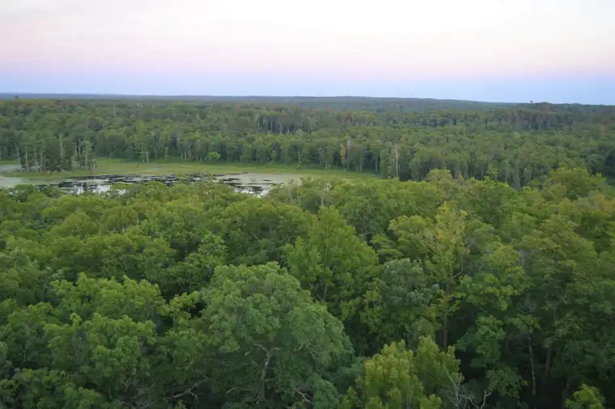
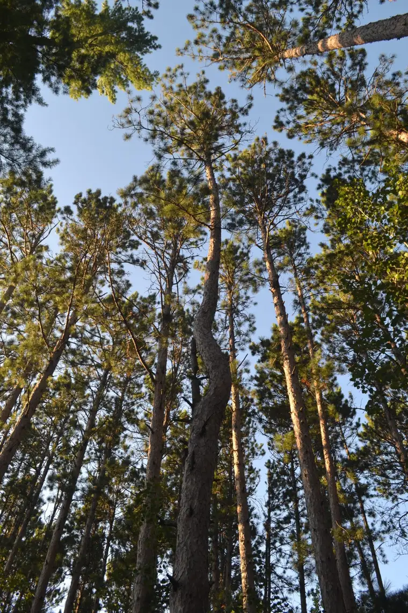
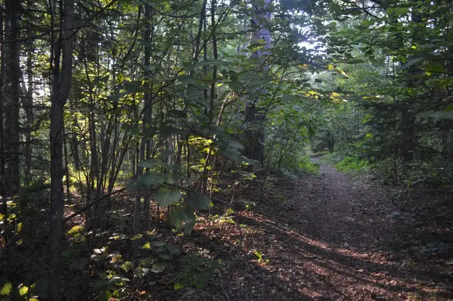
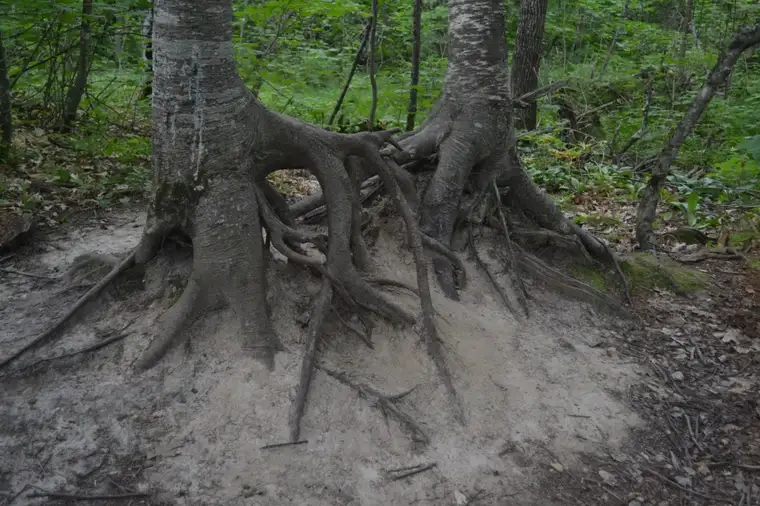
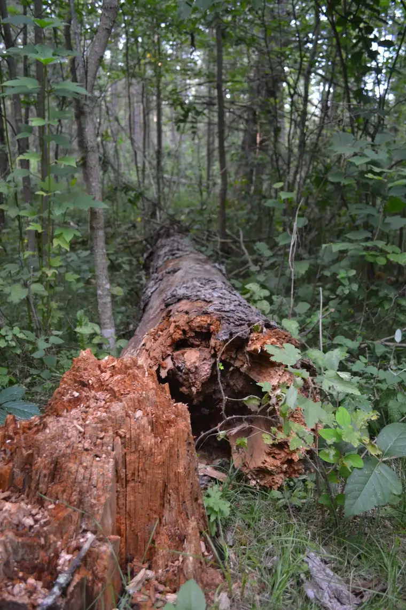
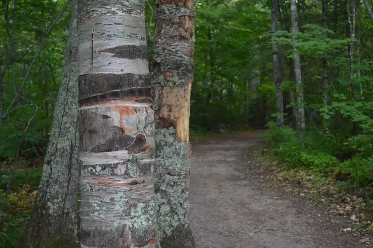
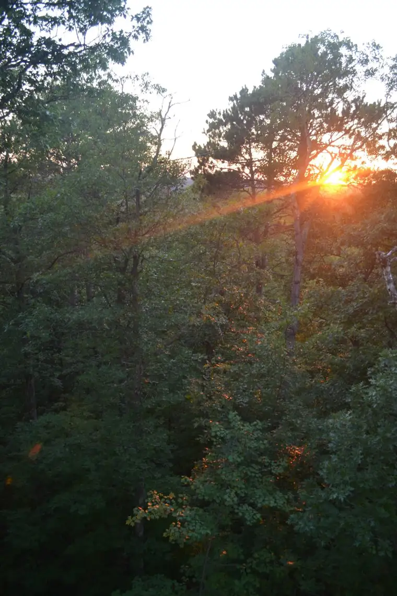
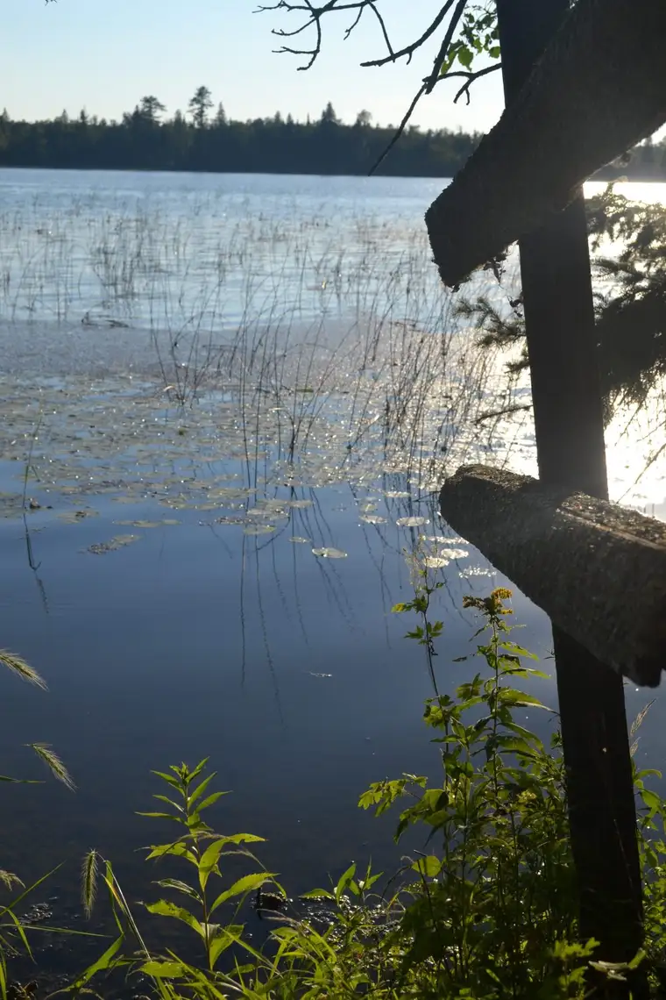
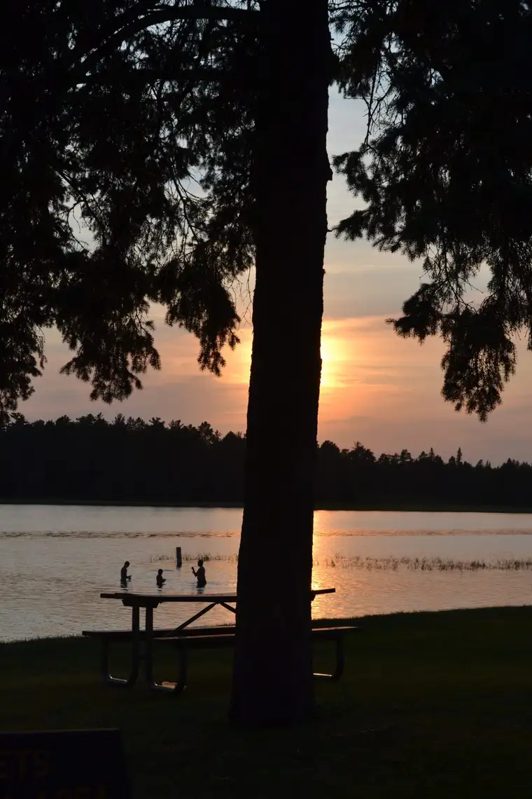

I’ve always loved trees. Growing up on the Plains of northeastern Montana, I experienced plentiful patches of them along the Missouri River, which wound southward of town. Cottonwoods closer by snowed “cotton” in the spring, spilling into puddles in the streets and turning them fluffy white.
But for vast stretches of the land around us, in a town named for a tree — Poplar — these beauties of nature were in relatively short supply. It was upon looking down on the flourishing trees in Minnesota during a plane ride that I determined I’d live near lots of trees someday, and chose Minnesota for college.

Eventually, though, I ended up in North Dakota, on the edge of the Red River, settling again on a mostly-treeless landscape, but which boasts the most glorious sunsets.
Thankfully, Minnesota is nearby, and the trees and lakes it harbors, a short drive away. We have become especially smitten by a particular proliferation of them at Itasca State Park, a place that where the headwaters of the Mighty Mississippi rest, and host of many summer family retreats.
After a few years off, this summer we found ourselves back in this bounteous place, surrounded once again by a colorful palette of wildflowers, birds which happily flitted about and filled the woods with song; along with chirping squirrels and myriad other critters; glistening lakes that wooed and refreshed; and, of course, the towering, telling trees.

This year, the trees spoke more profoundly to me than ever as I wandered through cemented paths and narrower dirt trails, allowing the restorative green to envelop and fill me.

Our trip happened around the time we were learning about a rather ugly scandal in the Church. Some of it had been hinted at earlier, but to confront the reality left part of me broken. I know I’m not alone in this feeling. Given this, the woods seemed especially, in an rather urgent way, necessary. I needed their calm. I needed what they had to tell me.
Trees don’t speak words, but wisdom. The forest holds many visual stories. Some of the trees were bent over, or showed erosion. One could imagine the many winters, the violent storms, that left them twisted or mangled.


Some just spoke of beauty. In trunks, I saw the touch of the divine. It caught me, and I found myself breathing and walking more slowly.

We stayed one night more than usual, and this extra evening gave us time to sink just a little deeper into the peace of this place. I wanted to hold it here, for myself, and perhaps, hopefully, for you, too. We all need these reminders of God’s bounty.
I took much of this in during the quiet, but in moments, the sounds of children entered the atmosphere. I welcomed them. There was the boy on a bike with his mother, chatting excitedly as they went along a path together. And at night, as the sun dipped, the sounds of children playing games, giggling before bedtime.
Our priest recently visited the Giant Sequoias in the Sierra Nevada, and wrote about his experience of them, calling them “cathedral-like.” “Everyone recognizes this — that they are in the presence of something special,” he observed. “People almost universally become quiet — voices are stilled as they look and wonder, and hushed when they speak.”
Though I’ve never been there, I could imagine it, based on our time at Itasca and the exhale it brought. He, however, mentioned how the presence of children could possibly make it harder for parents to appreciate the silence of the trees. My response differed; those small voices struck me as blessings. Maybe it’s because our children are no longer little, and I could see it from another vantage point.

No, rather than a distraction, the voices of the children echoing through the forest made me happy. I realized that children these days have so few chances to be in nature and just breathe. Parents these days, too, are running around trying to keep up with life in our modern age. It’s not easy, for either.
I realized that God wants to give us this gift. Our souls need the green, need the tall trees to whisper perspective and beauty into our hearts. We need, too, the calming effect of these trees next to a lavish lake near sunset.

As much as I realize we are invading the home of millions of critters, it didn’t escape me this visit that this was meant for us humans, too, and maybe most of all. I found myself feeling deeply grateful for those who, in their wisdom, make sure there are places like this for us to dwell, even for short bursts.
The trees whispered to me, over and over. They whispered simplicity. They chanted of the wide perspective we long to remember. They recalled other moments, in childhood, searching for insects, and watching my dad watch the birds. They told me to rest a while, and my body and soul responded in thanksgiving.
I came away convinced we all need a little time in the woods. We all need a chance to enfold ourselves in the trees, and let them speak to us. They want to heal us. It is God’s wish that we are healed. And if we listen, it’s quite possible the trees will draw us closer into the bosom of God.

Q4U: What is your relationship with trees? Your favorite memory of reveling in them?